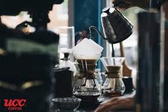

Founded in 2018, Café Coffee & More started with a simple vision: to bring people together over exceptional coffee and freshly baked goods in a warm, inviting neighborhood space.
We source 100% ethically grown Arabica beans directly from sustainable farms in South America and East Africa, roasting them locally in small batches to preserve peak aroma and character.
Whether you're starting your morning with an espresso, catching up with friends, or finding a quiet spot to work, our baristas are here to make your day brighter.